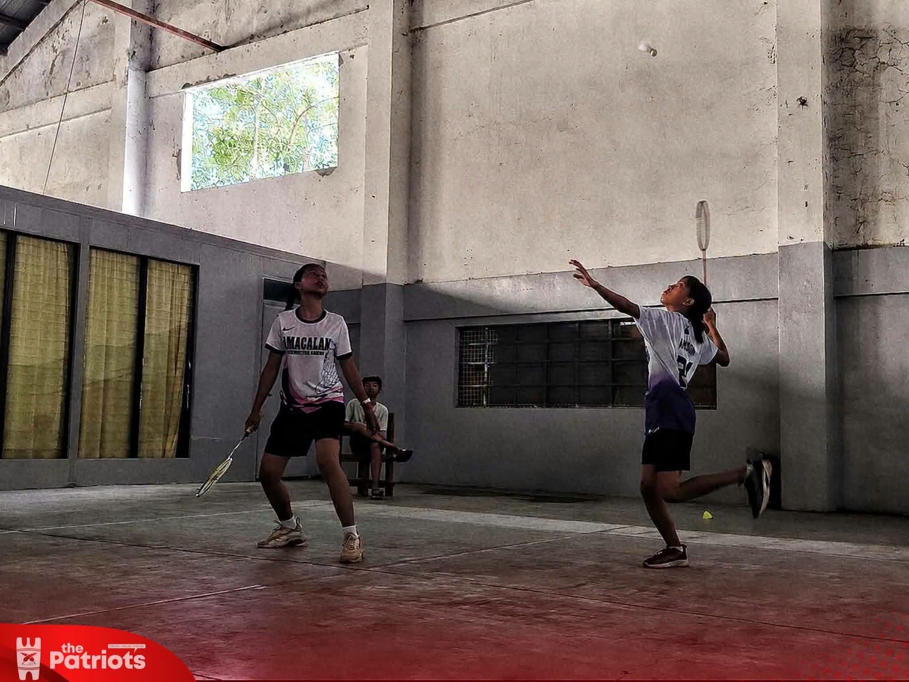
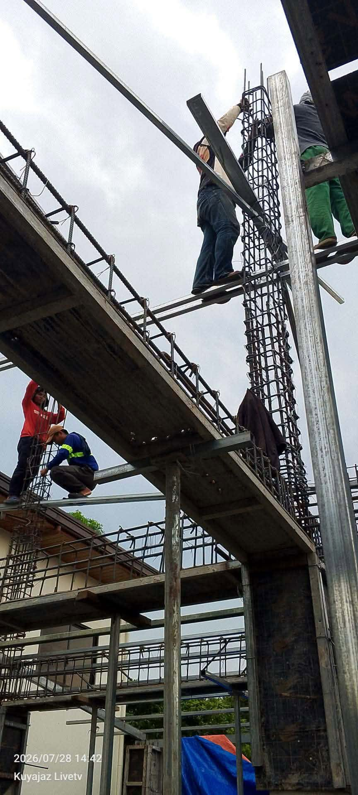
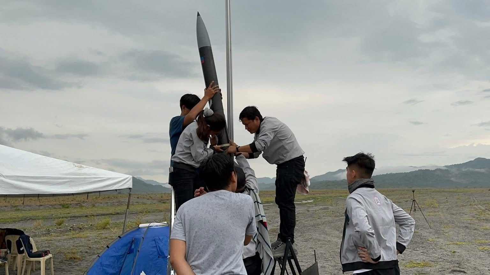
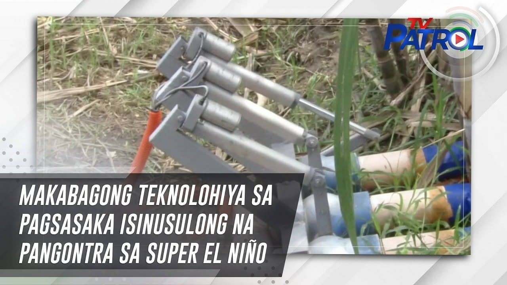
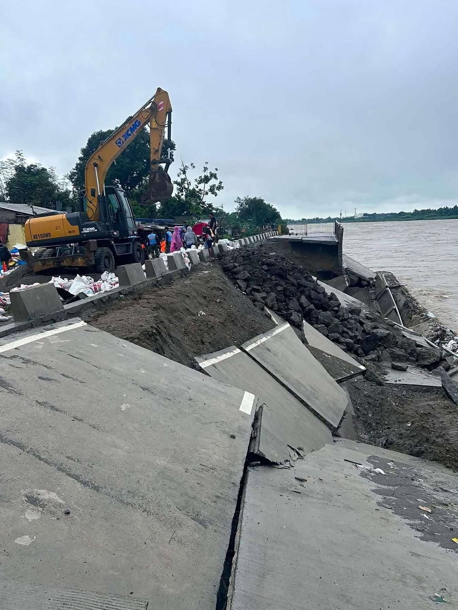

Sports
Corazon C. Aquino High School Badminton Athletes Qualify for Provincial Meet
by: Audrey Lopez
Read articleFeatured article

by: Jodiel Bala
“Safety and resilience rise in a duplex residence with a bungalow beside it, more than concrete and steel.”
Read the article
Sports
by: Audrey Lopez
Read articlePhysics
by: Chris Derick Ortega
Read articlePhysics
by: Chris Derick Ortega
Read article
Physics
by: Desiree Mae Gomez
Read articleScience
by: Desiree Mae Gomez
Read articleScience
by: Nina Diamzon
Read article
Science
by: Nina Diamzon
Read article
Physics
by: Joe Reese Abracia
Read articlePhysics
by: Audrey Lopez
Read articleThe Spectrum is a place where ideas, discoveries, and stories come together to reveal the many sides of the world around us.